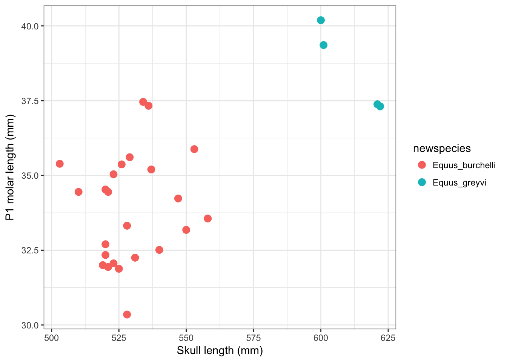

Zebra skull analysis
Joe Bostok-Jones, Joe Broomfield, Matthew Greenwell, Heather Lang, Jessica Ward
16 May 2017
Abstract
- Black with white stripes or white with black stripes?
- Does anyone actually care?
Introduction
- We investigated allometry in zebras using measurements taken from museum specimen skulls
- At this point we would usually:
- write a bit about about why we are doing this study
- maybe give you some nice zebra facts
- As we are lacking in zebra information, however, we have included a fun zebra gif for you

Dancing zebra!! Woohoo
Methods
Sample selection
- Zebra skulls were sampled from the collections of the Natural History Museum, London, UK
Measurements
- Zebra skull length was measured using a rule placed on the table
- Each skull was placed beside the rule so that the ventral surface of the upper jaw was displayed
- An exercise book was placed at the posterior and anterior of each skull and the distance between the two was measured (Figure 1)

- Premolar one (P1) on the right hand side of each skull was measured using a pair of calipers (Figure 2)

Statistical analyses
- Analyses of the relationship between skull length and P1 molar length were conducted in R version 3.4.0
Results
Sample description
- All skulls sampled (N = 28) were included in the full analysis set
- The skulls belonged to \($\)two species of zebra; Equus grevyi (n = 4) and Equus burchelli (n = 24)
- An unknown number of Equus zebra skulls were stuck in cupboards that would not unlock, and were excluded from the study
- The mean skull length was XXX and the mean skull width was XXX (N = 28
- The full dataset and metadata are available as supplementary material
Relationship between skull length and P1 molar length
| plot a graph |
r ggplot(zebra, aes(skull_length , tooth_p1_length)) + geom_point(size = 3 , colour = "coral") |
|  |
making the model
model1 <- lm(tooth_p1_length ~ skull_length, data = zebra)checking the assumptions
autoplot(model1, smooth.colour = NA)anova(model1)## Analysis of Variance Table
##
## Response: tooth_p1_length
## Df Sum Sq Mean Sq F value Pr(>F)
## skull_length 1 65.110 65.110 18.178 0.0002344 ***
## Residuals 26 93.126 3.582
## ---
## Signif. codes: 0 '***' 0.001 '**' 0.01 '*' 0.05 '.' 0.1 ' ' 1summary(model1)##
## Call:
## lm(formula = tooth_p1_length ~ skull_length, data = zebra)
##
## Residuals:
## Min 1Q Median 3Q Max
## -3.5652 -1.6171 -0.6032 1.4472 3.2524
##
## Coefficients:
## Estimate Std. Error t value Pr(>|t|)
## (Intercept) 8.17953 6.19430 1.320 0.198177
## skull_length 0.04874 0.01143 4.264 0.000234 ***
## ---
## Signif. codes: 0 '***' 0.001 '**' 0.01 '*' 0.05 '.' 0.1 ' ' 1
##
## Residual standard error: 1.893 on 26 degrees of freedom
## Multiple R-squared: 0.4115, Adjusted R-squared: 0.3888
## F-statistic: 18.18 on 1 and 26 DF, p-value: 0.0002344yes, skull length does have a significant effect on tooth length p< 0.001, F = 18.174 dF= 25
plotting graph looking for allometry
plotting the graph with linear regression and confidence limits
## Warning: Ignoring unknown aesthetics: ymin, ymax
| term | estimate | std.error | statistic | p.value |
|---|---|---|---|---|
| (Intercept) | 8.18 | 6.194 | 1.32 | 0.1982 |
| skull_length | 0.04874 | 0.01143 | 4.264 | 0.0002344 |
In this model, skull length significantly predicts tooth length (p < 0.001).
The model predictions indicate that, in the sample, for every 1 cm increase in skul length, the tooth length increases by 0.5 mm.
The grand vision
Hans Rosling on open data in 2006
How do we get there?
Getting a handle on our research materials

21st Century Research meta-responsibilities
Better digital curation of the workhorses of modern science: code & data
- accessible
- reusable
- searchable
We all need to do our bit

Drivers of better digital management
- Funders: value for money, impact, reputation
- Publishers: many now require code and data.
- Specialist journals for software (e.g Journal of Open Source Software and data (e.g. Scientific Data) have emerged.
- Your wider scientific community
- PIs, Supervisors and immediate research group
Yourselves!
be your own best friend:
aim to create secure materials that are easy to use and REUSE
Resources
Nine simple ways to make it easier to (re)use your data
We describe nine simple ways to make it easy to reuse the data that you share and also make it easier to work with it yourself. Our recommendations focus on making your data understandable, easy to analyze, and readily available to the wider community of scientists.

BES guide to data management

This guide for early career researchers explains what data and data management are, and provides advice and examples of best practices in data management, including case studies from researchers currently working in ecology and evolution.


Data carpentry
- Domain specific lessons available free online
- Ecology materials
- Genomics materials
- Geospatial data materials
- Biology semester long materials
- Look out for training sessions

Seek help from support teams
Most university libraries have assistants dedicated to Research Data Management:
@tomjwebb @ScientificData Talk to their librarian for data management strategies #datainfolit
— Yasmeen Shorish (@yasmeen_azadi) January 16, 2015
Basic Data Hygiene
Plan your Research Data Management
- Start early. Make an RDM plan before collecting data.
- Anticipate data products as part of your thesis outputs
- Think about what technologies to use
Take initiative & responsibility. Think long term.
Act as though every short term study will become a long term one @tomjwebb. Needs to be reproducible in 3, 20, 100 yrs
— oceans initiative (@oceansresearch) January 16, 2015
Data entering
extreme but in many ways defendable
@tomjwebb stay away from excel at all costs?
— Timothée Poisot (@tpoi) January 16, 2015
excel: read only
@tomjwebb @tpoi excel is fine for data entry. Just save in plain text format like csv. Some additional tips: pic.twitter.com/8fUv9PyVjC
— Jaime Ashander (@jaimedash) January 16, 2015
@jaimedash just don’t let excel anywhere near dates or times. @tomjwebb @tpoi @larysar
— Dave Harris (@davidjayharris) January 16, 2015
Databases: more robust
- good qc and advisable for multiple contributors
@tomjwebb databases? @swcarpentry has a good course on SQLite
— Timothée Poisot (@tpoi) January 16, 2015
@tomjwebb @tpoi if the data are moderately complex, or involve multiple people, best to set up a database with well designed entry form 1/2
— Luca Borger (@lucaborger) January 16, 2015
Databases: benefits
@tomjwebb Entering via a database management system (e.g., Access, Filemaker) can make entry easier & help prevent data entry errors @tpoi
— Ethan White (@ethanwhite) January 16, 2015
@tomjwebb it also prevents a lot of different bad practices. It is possible to do some of this in Excel. @tpoi
— Ethan White (@ethanwhite) January 16, 2015
@ethanwhite +1 Enforcing data types, options from selection etc, just some useful things a DB gives you, if you turn them on @tomjwebb @tpoi
— Gavin Simpson (@ucfagls) January 16, 2015
Data formats
.csv: comma separated values..tsv: tab separated values..txt: no formatting specified.
@tomjwebb It has to be interoperability/openness - can I read your data with whatever I use, without having to convert it?
— Paul Swaddle (@paul_swaddle) January 16, 2015
more unusual formats will need instructions on use.
Ensure data is machine readable
bad

bad

good

ok

- could help data entry
.csvor.tsvcopy would need to be saved.
Use good null values
Missing values are a fact of life
- Usually, best solution is to leave blank
NAorNULLare also good options- NEVER use
0. Avoid numbers like-999 - Don’t make up your own code for missing values
read.csv() utilities
na.string: character vector of values to be coded missing and replaced withNAto argument egstrip.white: Logical. ifTRUEstrips leading and trailing white space from unquoted character fieldsblank.lines.skip: Logical: ifTRUEblank lines in the input are ignored.fileEncoding: if you’re getting funny characters, you probably need to specify the correct encoding.
read.csv(file, na.strings = c("NA", "-999"), strip.white = TRUE,
blank.lines.skip = TRUE, fileEncoding = "mac")
readr::read_csv() utilities
na: character vector of values to be coded missing and replaced withNAto argument egtrim_ws: Logical. ifTRUEstrips leading and trailing white space from unquoted character fieldscol_types: Allows for column data type specification. (see more)locale: controls things like the default time zone, encoding, decimal mark, big mark, and day/month namesskip: Number of lines to skip before reading data.n_max: Maximum number of records to read.
read_csv(file, col_names = TRUE, col_types = NULL, locale = default_locale(),
na = c("", "NA", "-999"), trim_ws = TRUE, skip = 0, n_max = Inf)
Basic quality control
Have a look at your data with Viewer(df)
- Check empty cells
- Check the range of values (and value types) in each column matches expectation. Use
summary(df) - Check units of measurement
- Check your software interprets your data correctly eg.
for a data framedf;head(df)(see top few rows) andstr(df)(see object structure) are useful.
- consider writing some simple QA tests (eg. checks against number of dimensions, sum of numeric columns etc)
Raw data are sacrosanct
@tomjwebb don't, not even with a barge pole, not for one second, touch or otherwise edit the raw data files. Do any manipulations in script
— Gavin Simpson (@ucfagls) January 16, 2015
@tomjwebb @srsupp Keep one or a few good master data files (per data collection of interest), and code your formatting with good annotation.
— Desiree Narango (@DLNarango) January 16, 2015
Know your masters
- identify the
mastercopy of files - keep it safe and and accessible
- consider version control
- consider centralising

Avoid catastrophe
Backup: on disk
- consider using backup software like Time Machine (mac) or File History (Windows 10)
Backup: in the cloud
- dropbox, googledrive etc.
- if installed on your system, can programmatically access them through
R - some version control
@tomjwebb Back it up
— Ben Bond-Lamberty (@BenBondLamberty) January 16, 2015
Backup: the Open Science Framework osf.io
- version controlled
- easily shareable
- works with other apps (eg googledrive, github)
- work on an interface with R (OSFr) is in progress. See more here
Backup: Github
most solid version control.
keep everything in one project folder.
Can be problematic with really large files.
Metadata
Documenting your data
You got data. Is it enough?
@tomjwebb I see tons of spreadsheets that i don't understand anything (or the stduent), making it really hard to share.
— Erika Berenguer (@Erika_Berenguer) January 16, 2015
@tomjwebb @ScientificData “Document. Everything.” Data without documentation has no value.
— Sven Kochmann (@indianalytics) January 16, 2015
@tomjwebb Annotate, annotate, annotate!
— CanJFishAquaticSci (@cjfas) January 16, 2015
Document all the metadata (including protocols).@tomjwebb
— Ward Appeltans (@WrdAppltns) January 16, 2015
You download a zip file of #OpenData. Apart from your data file(s), what else should it contain?
— Leigh Dodds (@ldodds) February 6, 2017
#otherpeoplesdata dream match!
Thought experiment: Imagine a dream open data set
It’s out there somewhere:
How would you locate it?
- what details would you need to know to determine relevance?
- what information would you need to know to use it?

metadata = data about data
Information that describes, explains, locates, or in some way makes it easier to find, access, and use a resource (in this case, data).


Backbone of digital curation
Without it a digital resource may be irretrievable, unidentifiable or unusable
Descriptive
- enables identification, location and retrieval of data, often includes use of controlled vocabularies for classification and indexing.
Technical
- describes the technical processes used to produce, or required to use a digital data object.
Administrative
- used to manage administrative aspects of the digital object e.g. intellectual property rights and acquisition.
This usually takes the form of a structured set of elements.
Elements of metadata
Structured data files:
- readable by machines and humans, accessible through the web
Controlled vocabularies eg. NERC Vocabulary server
- allows for connectivity of data
KEY TO SEARCH FUNCTION
- By structuring & adhering to controlled vocabularies, data can be combined, accessed and searched!
- Different communities develop different standards which define both the structure and content of metadata
Organising data and metadata
Start at the very least by creating a metadata tab within your raw data spreadsheets
Ideally set up a system of normalised tables (see section 3 in this post) and
READMEdocuments to manage and document metadata.Ensure everything someone might need to understand your data is documented
Different types data require different metadata
When you’re ready to publish, structure metadata into an
XMLfile, a searchable, shareable file.
Make your data alignable and generalisable
What information would other users need to combine your data with theirs?
- time
temporal (time of day, day, month, year, season) - space
geography (lat, lon, postcode) - taxonomy
species name; authority / source - provide information on extent and resolution
@tomjwebb record every detail about how/where/why it is collected
— Sal Keith (@Sal_Keith) January 16, 2015
Acknowledgements
Materials remixed from:
ACCE Research Data Management workshop materials
Data carpentry File Organization workshop materials